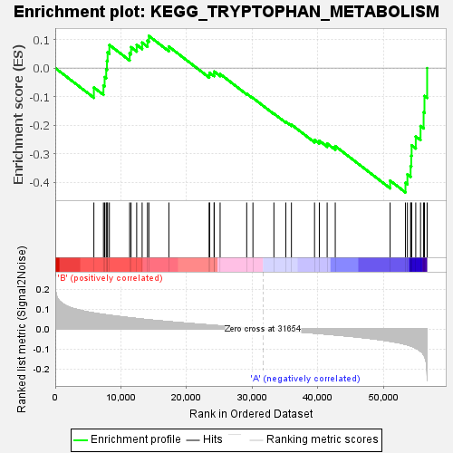
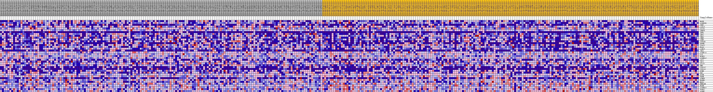
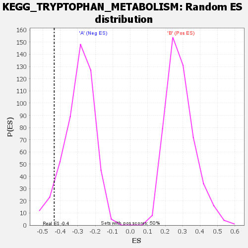

| | | Dataset | my.my.cls#B_versus_A.my.cls#B_versus_A_repos |
| Phenotype | my.cls#B_versus_A_repos |
| Upregulated in class | A |
| GeneSet | KEGG_TRYPTOPHAN_METABOLISM |
| Enrichment Score (ES) | -0.43487096 |
| Normalized Enrichment Score (NES) | -1.4865729 |
| Nominal p-value | 0.063872255 |
| FDR q-value | 0.49488473 |
| FWER p-Value | 0.754 |
Table: GSEA Results Summary

Fig 1: Enrichment plot: KEGG_TRYPTOPHAN_METABOLISM
Profile of the Running ES Score & Positions of GeneSet Members on the Rank Ordered List
| SYMBOL | TITLE | RANK IN GENE LIST | RANK METRIC SCORE | RUNNING ES | CORE ENRICHMENT | | 1 | MAOB | na | 5877 | 0.080 | -0.0680 | No |
| 2 | ALDH1B1 | na | 7337 | 0.073 | -0.0611 | No |
| 3 | TPH2 | na | 7514 | 0.072 | -0.0319 | No |
| 4 | AADAT | na | 7754 | 0.071 | -0.0044 | No |
| 5 | ACAT1 | na | 7870 | 0.071 | 0.0251 | No |
| 6 | AFMID | na | 7968 | 0.070 | 0.0547 | No |
| 7 | TPH1 | na | 8238 | 0.069 | 0.0808 | No |
| 8 | IDO2 | na | 11325 | 0.057 | 0.0517 | No |
| 9 | TDO2 | na | 11542 | 0.056 | 0.0728 | No |
| 10 | INMT | na | 12398 | 0.053 | 0.0812 | No |
| 11 | ASMT | na | 13226 | 0.050 | 0.0889 | No |
| 12 | CYP1B1 | na | 14041 | 0.047 | 0.0954 | No |
| 13 | OGDHL | na | 14253 | 0.046 | 0.1124 | No |
| 14 | IL4I1 | na | 17296 | 0.037 | 0.0751 | No |
| 15 | HAAO | na | 23429 | 0.021 | -0.0241 | No |
| 16 | AANAT | na | 23506 | 0.020 | -0.0164 | No |
| 17 | IDO1 | na | 24189 | 0.018 | -0.0202 | No |
| 18 | ALDH7A1 | na | 24194 | 0.018 | -0.0120 | No |
| 19 | CAT | na | 25099 | 0.016 | -0.0208 | No |
| 20 | ECHS1 | na | 29146 | 0.006 | -0.0895 | No |
| 21 | ALDH3A2 | na | 30096 | 0.004 | -0.1046 | No |
| 22 | AOX1 | na | 33289 | -0.004 | -0.1592 | No |
| 23 | AOC1 | na | 35100 | -0.009 | -0.1874 | No |
| 24 | ACAT2 | na | 35957 | -0.011 | -0.1978 | No |
| 25 | KMO | na | 39474 | -0.020 | -0.2511 | No |
| 26 | CYP1A2 | na | 40206 | -0.022 | -0.2542 | No |
| 27 | CYP1A1 | na | 41395 | -0.025 | -0.2640 | No |
| 28 | KYNU | na | 42629 | -0.029 | -0.2729 | No |
| 29 | DDC | na | 50983 | -0.060 | -0.3936 | No |
| 30 | GCDH | na | 53317 | -0.076 | -0.4012 | Yes |
| 31 | OGDH | na | 53614 | -0.078 | -0.3715 | Yes |
| 32 | ACMSD | na | 54100 | -0.083 | -0.3431 | Yes |
| 33 | HADHA | na | 54198 | -0.084 | -0.3072 | Yes |
| 34 | MAOA | na | 54256 | -0.085 | -0.2702 | Yes |
| 35 | EHHADH | na | 54885 | -0.094 | -0.2391 | Yes |
| 36 | HADH | na | 55613 | -0.110 | -0.2029 | Yes |
| 37 | ALDH9A1 | na | 56081 | -0.126 | -0.1549 | Yes |
| 38 | WARS2 | na | 56211 | -0.134 | -0.0974 | Yes |
| 39 | ALDH2 | na | 56619 | -0.235 | 0.0000 | Yes |
Table: GSEA details [plain text format]

Fig 2: KEGG_TRYPTOPHAN_METABOLISM
Blue-Pink O' Gram in the Space of the Analyzed GeneSet

Fig 3: KEGG_TRYPTOPHAN_METABOLISM: Random ES distribution
Gene set null distribution of ES for KEGG_TRYPTOPHAN_METABOLISM